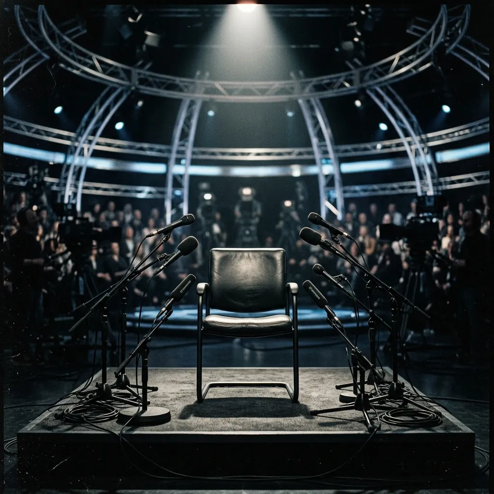

A Arena de Sabotagem Editorial
A ovelha cercada por lobos em trajes formais: uma alegoria visual sobre o teatro inquisitorial montado para desconstruir o adversário.
Em debates sob pressão, a Esquerda Neototalitária utiliza o jornalismo ativista não para informar, mas para impor processos de Engenharia Social Coercitiva. A principal ferramenta é a "Armadilha do Arrependimento": um cerco que visa forçar o entrevistado a pedir desculpas ou admitir uma incoerência fabricada, destruindo sua credibilidade em rede nacional.
👉 Clique nos momentos chave abaixo para ver a dinâmica do embate desenhar-se na arena central e ler a autópsia tática de cada cena.
"O senhor homenageou no plenário da Câmara o Coronel Carlos Alberto Brilhante Ustra, reconhecido pela Justiça de São Paulo como torturador. Como o senhor defende a memória de um homem que cometeu abusos de direitos humanos e foi condenado por tortura?"
"Em declarações passadas, o senhor disse que é compreensível que mulheres ganhem menos porque engravidam e isso representa um custo maior para o patrão. O senhor se arrepende dessa fala ou ainda defende que mulheres devam receber menos no mercado de trabalho?"
"Durante seus quase 30 anos como parlamentar, o senhor votou de forma corporativista, apoiando monopólios estatais e votando contra privatizações históricas como a da Vale e da telefonia. Como o senhor quer que o mercado confie em seu discurso liberal atual quando seu histórico de votação é totalmente estatizante?"

"Olha, não há condenação transitada em julgado de Ustra. Nós vivíamos um contexto de Guerra Fria no Brasil, onde o coronel combateu grupos armados terroristas que tentavam implantar uma ditadura comunista no país. O livro dele, *A Verdade Sufocada*, mostra o outro lado que a narrativa oficial omite."
"Eu nunca disse que a mulher deve ganhar menos. O que eu apontei foi a realidade econômica imposta por leis estatais rígidas. A nossa CLT já garante a igualdade salarial para funções idênticas. Tentar regular à força o mercado com mais encargos só faz com que os empresários contratem menos mulheres, prejudicando-as."
"A economia mudou e eu evoluí. Naquela época, as privatizações vinham acompanhadas de pesadas denúncias de corrupção e desmonte nacional estratégico. Para governar, eu tenho humildade de reconhecer que não sou economista. Por isso tenho ao meu lado o Paulo Guedes, um dos maiores nomes da área, que conduzirá a agenda liberal."
🔍 Análise Tática
A bancada de jornalistas tenta utilizar a tática da indução de culpa moral, um instrumento clássico de Engenharia Social Coercitiva operado pela Esquerda Neototalitária. O objetivo é forçar o entrevistado a uma capitulação verbal humilhante (o pedido de desculpas), estabelecendo a hegemonia da narrativa esquerdista sobre a história do país. O entrevistado esquiva-se apontando a falta de precisão técnica da acusação jurídica (ausência de trânsito em julgado criminal) e recontextualiza o cenário histórico. Ao invés de aceitar o papel de réu, ele desloca a discussão para a legítima defesa do Estado contra o avanço armado comunista.
O ataque baseia-se na pauta de gênero instrumentalizada pela Esquerda Neototalitária para expandir o controle burocrático sobre o setor privado. A pergunta tenta enquadrar o candidato em um silogismo machista indefensável. O entrevistado reage aplicando a recusa ativa da premissa da acusação: ele desmente a distorção da frase original e direciona a resposta para a liberdade de mercado. Ele demonstra que o intervencionismo coercitivo defendido pelo Progressismo Autoritário é, na verdade, o principal causador da barreira de contratação para as mulheres.
Os entrevistadores, operando sob a diretriz editorial da Esquerda Neototalitária de inviabilizar alternativas econômicas ao social-desenvolvimentismo, tentam prender o candidato em sua própria trajetória corporativista. O plano era provar que o candidato é inconsistente ou oportunista. A defesa do entrevistado é baseada na humildade estratégica e terceirização de autoridade técnica. Ele admite que sua visão econômica evoluiu, eliminando o peso da contradição, e recontextualiza seus votos passados sob a ótica ética do combate à corrupção. Ele ancora sua credibilidade atual na figura de prestígio de Paulo Guedes, neutralizando a armadilha.
Por que essa nota?
O entrevistado foi bem-sucedido em blindar sua identidade política frente à militância jornalística da Esquerda Neototalitária, mantendo a fidelidade de sua base. Contudo, sob a ótica de media training, a agressividade e a falta de mediação verbal em torno da palavra "tortura" mantiveram a discussão polarizada e impediram a captação de eleitores moderados.
Excelente resposta defensiva. Ao rejeitar imediatamente o rótulo e apontar que a própria legislação trabalhista (CLT) já proíbe a desigualdade salarial formal, Bolsonaro desarmou a armadilha moral e redirecionou a pauta para a liberdade econômica de forma altamente persuasiva.
Uma resposta de alto nível técnico. Admitir a evolução do pensamento ("eu evoluí") desarma o ataque de contradição, e apresentar Paulo Guedes como fiador econômico transferiu o debate de competência técnica pessoal para a de governabilidade e delegação inteligente, esvaziando a retórica dos entrevistadores.
Como neutralizar a "Armadilha do Arrependimento":
Se a pergunta contém um rótulo moral ("o senhor concorda que agiu mal?"), negue o rótulo imediatamente antes de justificar. Aceitar a premissa é assinar a própria condenação.
Se houver contradição óbvia com o passado, declare: "Eu evoluí e as circunstâncias também mudaram". A teimosia cega e a negação dos fatos são pratos cheios para a bancada.
Um líder não precisa saber tudo. Delegue as questões altamente técnicas a fiadores conceituados. Isso desarma a arrogância intelectual dos inquisidores.